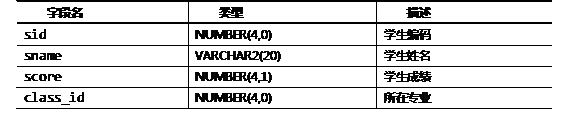
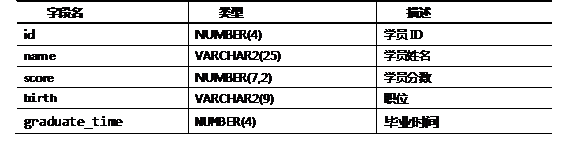
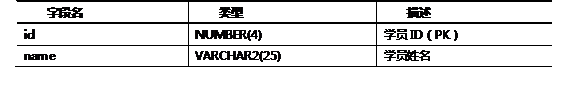

JAVA ORACLE DAY05
1 Oracle视图操作综合示例
1.1 问题
有学员表student，表结构如表－1所示：
表－1 学员表student信息
学员表student的示例数据如图-1所示。
图-1
请根据上述表结构和示例数据，完成如下各个案例。
1) 基于student表创建视图v_student_101，该视图包含student表的数据的子集，即所有专业为101的学生的数据为视图v_student_101的数据。
2）查询视图v_student_101中的所有数据。
3）对视图v_student_101执行插入操作，插入的数据信息为sid、sname、score的数据分别为1234、rose、90，并检查插入操作的结果。
4）基于student表创建了一个视图v_student，查询学生的平均成绩，该视图的数据显示如图-2所示。
图-2
5）在视图v_student中，执行如下SQL语句：
- update v_student set avg_score =80 where class_id=101；
执行上述SQL语句，将产生的结果是什么？
6）定义视图v_stu，在视图v_student现有列的基础上，加入人数一列,并查询。
7）从v_stu视图中查找数据的SQL语句为：
- SELECT * FORM View v_student;
上述查询视图的SQL语句是否正确？为什么？
8）删除视图v_student以及v_stu。
1.2 步骤
实现此案例需要按照如下步骤进行。
步骤一：创建视图v_student_101
使用create view语句基于student表创建名为v_student_101的视图，该视图包含student表的数据的子集，即所有专业为101的学生的数据为视图v_student_101的数据，SQL语句如下所示：
- CREATE VIEW v_student_101
- AS
- SELECT sid, sname, score
- FROM student
- where class_id = 101;
步骤二：查询视图中的数据
使用select语句查询视图v_student_101中的所有数据，SQL语句如下所示：
- select * from v_student_101;
查询的结果如图-3所示。
图-3
从查询结果中的数据可以看出，只包含所在专业为101的学员信息。
步骤三：对视图执行插入操作
使用insert语句对视图v_student_101执行插入操作，插入的数据信息为sid、sname、score的数据分别为1234、rose、90，SQL语句如下所示：
- insert into v_student_101 values(1234,‘rose’,90);
- commit；
使用如下SQL语句查询v_student_101视图的数据：
- select * from v_student_101;
会发现查询不到刚插入的数据。接着，使用下列SQL语句去查询表student：
- select * fromstudent;
会发现student表多了一条记录，即为刚刚插入的那条数据。视图本身并不包含数据，只是基表数据的逻辑映射。当对视图(v_student_101)执行DML操作时，实际上是对基表（student）的DML操作。
步骤四：创建复杂视图v_student
使用create view语句基于student表创建了一个视图v_student，查询学生的平均成绩，SQL语句如下所示：
- CREATE VIEW v_student
- AS
- SELECT class_id, avg(score) avg_score
- FROM student
- GROUP BY class_id;
复杂视图指在子查询中包含了表达式、单行函数或分组函数的视图，上述视图属于负载视图。复杂视图必须为子查询中的表达式或函数定义别名。
步骤五：对复杂视图v_student执行DML操作
在视图v_student中，执行如下SQL语句：
- update v_student set avg_score =80 where class_id=101；
执行上述SQL语句，产生的结果如图-4所示。
图-4
从图-4可以看出复杂视图不允许DML操作。
步骤六：创建复杂视图v_stu
使用create view语句创建复杂视图v_stu，该视图在v_student视图现有列的基础上，加入人数一列，SQL语句如下所示：
- CREATE VIEW v_stu
- AS
- SELECT class_id, avg(score) avg_score, count(*) cnt
- FROM student
- GROUP BY class_id;
查询该视图的SQL语句如下所示：
- select * from v_stu;
查询结果如图-5所示：
图-5
步骤七：查询视图
从v_student视图中查找数据的SQL语句为：
- SELECT * FORM View v_student;
上述查询视图的SQL语句是不正确的。查询视图和查询表的SQL语句类似，只需将表名的位置更换为视图名字即可，正确的写法为：
- SELECT * FORM v_student;
步骤八：删除视图v_student以及v_stu
使用drop view语句删除视图v_student以及v_stu，SQL语句如下所示：
- DROPVIEWv_student;
- DROPVIEWv_stu;
执行上述SQL语句将视图v_student以及v_stu删除掉，但是创建这两个视图的基表student的数据并不受影响。这是因为，视图虽然是存放在数据字典中的独立对象，但视图仅仅是基于表的一个查询定义，所以对视图的删除不会导致基表数据的丢失，不会影响基表数据。
2 通过序列实现自动生成主键
2.1 问题
本案例的详细要求如下：
1）创建序列emp_seq，该序列的起始值为100，步进为10。
- CREATE SEQUENCE emp_seq
- START WITH 100
- INCREMENT BY 10;
2）查询序列的下一个值。
- SELECT emp_seq.NEXTVAL FROM DUAL;
3）利用序列emp_seq为emp表生成主键。向emp表插入的数据为empno由序列生成、ename为“donna”。
- INSERT INTO emp(empno, ename)
- VALUES(emp_seq.NEXTVAL, 'donna');
4）查询插入的数据是否插入成功。
- SELECT empno, ename FROM emp WHERE ename = 'donna';
5）查询序列emp_seq的当前值。
- SELECT emp_seq.CURRVAL FROM DUAL;
6）再次利用序列emp_seq为EMP表生成主键，数据为empno由序列生成、ename为“donna”，SQL语句如下所示：
- INSERT INTO emp(empno, ename)
- VALUES(emp_seq.NEXTVAL, 'donna');
7）查询上一步骤中插入的数据是否插入成功。
- SELECT empno, ename FROM emp;
2.2 步骤
实现此案例需要按照如下步骤进行。
步骤一：创建序列emp_seq
使用create sequence创建序列emp_seq，该序列的起始值为100，步进为10,SQL语句如下所示：
- CREATE SEQUENCE emp_seq
- START WITH 100
- INCREMENT BY 10;
步骤二：查询序列的下一个值
使用查询NEXTVAL获取序列emp_seq的下一个值,SQL语句如下所示：
- SELECT emp_seq.NEXTVAL FROM DUAL;
步骤三：使用序列作为表的主键
利用序列emp_seq为emp表生成主键，向emp表插入的为empno由序列生成、ename为“donna”，SQL语句如下所示：
- INSERT INTO emp(empno, ename)
- VALUES(emp_seq.NEXTVAL, 'donna');
步骤四：查询插入的数据是否插入成功
查询上一步骤中向emp表插入的数据是否插入成功，SQL语句如下所示：
- SELECT empno, ename FROM emp WHERE ename = 'donna';
执行上述SQL语句emp表的数据如图-6所示。
图-6
从图-6可以看出该记录中的empno列的数据为110，在之前100的基础上步进了10。
步骤五：查询序列的当前值
查询序列emp_seq的当前值,SQL语句如下所示：
- SELECT emp_seq.CURRVAL FROM DUAL;
查询后，序列的当前值为110。
步骤六：再次利用序列作为主键插入数据
再次利用序列emp_seq为EMP表生成主键，数据为empno由序列生成、ename为“donna”，SQL语句如下所示：
- INSERT INTO emp(empno, ename)
- VALUES(emp_seq.NEXTVAL, 'donna');
步骤七：查询上一步骤中插入的数据是否插入成功
- SELECT empno, ename FROM emp;
执行上述SQL语句，查询的结果如图-7所示。
图-7
从图-7的查询结果可以看出，序列的当前值为120。
3 外键约束综合示例
3.1 问题
本案例的详细要求如下：
1) 请看如下SQL语句：
- deleteproduct where p_id= 1011;
执行上述SQL语句，提示错误“已找到子记录日志”，错误的原因什么？
2）student表结构如表-2所示。
表－2学员表student 信息
student表的如图-8所示。

图-8
GraduateTime表结构如表-3所示。
表－3 GraduateTime表信息
GraduateTime表的数据如图-9所示。
图-9
其中，student表和GraduateTime表存在外键关系，即毕业时间graduate_time列作为外键（Foreign Key）关联到GraduateTime表的主键列（id）。
下列SQL语句会引发异常“ORA-02291：违反完整约束条件－未找到父项关键字”的是：（）。
A．update student set graduate_time =1003 where id=1011;
B．update student set name= 'smith', graduate_time = 1005 where id=1011;
C．update student set name= 'smith', graduate_time = 1004 where id=1011;
D．update student set id=null, score= 85 where graduate_time = 1005;
3.2 步骤
实现此案例需要按照如下步骤进行。
步骤一：问题一解答
本题中提示错误“已找到子记录日志“说明product表中，编码为1011的商品被其它表中的数据参照，该表中的该行记录不允许删除。如果解除外键关联关系，再实施删除则会成功。
步骤二：问题二解答
问题二的正确答案为B。外键约束条件包括两个方面的数据约束：
1）从表上定义的外键的列值，必须从主表被参照的列值中选取，或者为NULL；
2）当主表参照列的值被从表参照时，主表的该行记录不允许被删除。
本题属于上述描述中的第一条。B选项中的更新语句，欲将学员ID为1011的毕业时间（graduate_time）更新为1005，列graduate_time为外键，其数据要参照主表（GraduateTime）id列的数据，由于在GraduateTime表不存在id列为1005的数据，因此会引发异常“ORA-02291：违反完整约束条件－未找到父项关键字”。